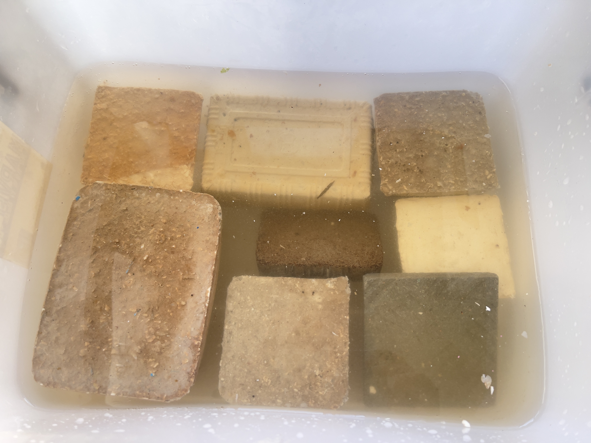

This section introduces our methods for transforming various waste streams into sustainable construction products using our patented binder technology.
Textile Waste ➝ Composite Panels
We transform textile waste into solid, moldable panels using a simple 4-step process: shredding, mixing with our binder, molding, and curing. These materials are ideal for housing and infrastructure in underdeveloped regions.
Plastic Waste ➝ Marine Landfill Blocks
Collected ocean plastic waste is processed onboard a converted vessel. The resulting blocks are cured within 6 hours and ready for use in marine landfill operations. Our system can eliminate 100,000 tons in just 100 working days.
Scalability and Global Relevance
Our technology works with various waste materials including plastics, fibers, and even municipal sludge. The cured blocks are high-strength, water-resistant, and compatible with conventional construction systems.